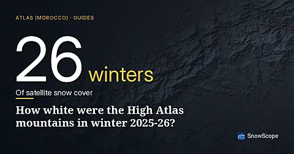

Mild day in Croatia: the snow retreats to 1,500 m
Yesterday about 1,830 km² was white in Croatia; today 880 km² is left, 950 km² less in one day.
See the live snow forecast for Rudnik Tršće in the SnowScope appSnow depth, powder alerts and the 3D map, free.
A mild day eats the snow
Mild air hits the thin snow of the valleys first. Expect wet, heavy snow low down in the afternoon and firm, icy patches the next morning.
880 km² of snow-covered ground in Croatia this Monday, 950 km² less than yesterday. Roughly 10 % of the country's mapped mountains and hills are covered.
| Resort | Snow depth | New snow, 72 h | Coming, next days | Top |
|---|---|---|---|---|
| Rudnik Tršće | 17 cm | 0 cm | 0 cm | 1,019 m |
| Platak | 11 cm | 0 cm | 0 cm | 1,354 m |
| skijalište Vučići | 7 cm | 0 cm | 0 cm | 402 m |
| Sljeme | 6 cm | 0 cm | 0 cm | 1,029 m |
Low, middle and high ground
Climb and the snow gets deeper: between 500 and 1,000 m, under 1 cm on average, 8 % covered; between 1,000 and 1,500 m, under 1 cm on average, 16 % covered; between 1,500 and 2,000 m, 2 cm on average, 59 % covered.
Where to ski first
Rudnik Tršće leads with 17 cm on its upper slopes.
Close behind: Platak (11 cm), skijalište Vučići (7 cm) and Sljeme (6 cm).
4 of the 4 resorts we follow in Croatia have snow on their upper slopes.
The rest of the shortlist: skijalište Vučići: 7 cm on top, 0 cm in three days, 0 cm expected; Sljeme: 6 cm on top, 0 cm in three days, 0 cm expected.
Snow on the way?
Over the next three days up to 0 cm is expected, and up to 9 cm over the week.
The snowiest day looks like Monday 23 November, with up to 5 cm in the snowiest spots.
Further out, days 8 to 14 show up to 11 cm on the snowiest slopes.
What it means on the slopes
The snow is retreating uphill, so plan on the higher lifts and avoid the low valley runs.
Snow on the ground
Compared with 40 km² seven days ago, that is 840 km² more. The snow line sits near 1,500 m.
Fresh snow
The last three days were dry or nearly so, with no more than 0 cm anywhere.
Compared with past winters
Resort by resort, today against a normal 16 November: Rudnik Tršće: 1 cm at about 924 m, against 0 cm in a normal year; Platak: 0 cm at about 1,220 m, against 0 cm in a normal year; skijalište Vučići: 2 cm at about 367 m, against 0 cm in a normal year; Sljeme: 0 cm at about 882 m, against 0 cm in a normal year.
2 of these 4 resorts are above their usual depth for the date.
These depths are for one height on each mountain, below the top, so they read lower than the upper-slope numbers further down.
In past winters the best snow at Rudnik Tršće usually came early March / mid-March.
The neighbours today
For comparison, the neighbours on the same day: Slovenia: 15 % white, deepest Gače with 28 cm, up to 7 cm in the week ahead; Bosnia and Herzegovina: 2 % white, deepest Skijalište Kozara with 24 cm, up to 15 cm in the week ahead.
Planning a day on the snow
Between 1,500 m and 2,000 m the cover is patchy, about 59 % white: expect grass and stones between the snow.
Below 1,000 m the slopes are still almost bare.
Little new snow is expected in the next three days, so today's picture should hold for a weekend trip.
Tips for skiers
- Morning snow is firm after a clear night: wait for the sun on south faces.
- Check the resort's own lift status before you travel.
- Early-season snow is thin over rocks: ski the groomed runs first.
About these numbers
Resort snow depths are the deepest snow on the resort's upper slopes from the SnowScope snow model (about 1 km, run of 16 November); they are estimates for an area, not a measurement at one point. Station values are measurements on the date shown. Forecasts can change. Always read the official avalanche bulletin before going off-piste.
Cite this report
For research, teaching or the press: the numbers and charts are free to reuse under CC BY 4.0 with this citation.
SnowScope (2026), Mild day in Croatia: the snow retreats to 1,500 m, https://snowscope.app/blog/en/2026/11/croatia-snow-report-16-november-2026.html, accessed 2026-11-16
SnowScope (Atlas Labs). (2026, November 16). Mild day in Croatia: the snow retreats to 1,500 m. SnowScope snow reports. https://snowscope.app/blog/en/2026/11/croatia-snow-report-16-november-2026.html
BibTeX
@misc{snowscope2026croatiasnowreport16novem,
author = {{SnowScope (Atlas Labs)}},
title = {Mild day in Croatia: the snow retreats to 1,500 m},
year = {2026},
month = nov,
howpublished = {\url{https://snowscope.app/blog/en/2026/11/croatia-snow-report-16-november-2026.html}},
note = {Published 2026-11-16 20:42 UTC; accessed 2026-11-16}
}· CC BY 4.0 · Methods, data and tools →
Rudnik Tršće: snow and temperature by height, this winter vs last (tools) →
Follow Rudnik Tršće
Free: a message when fresh snow is coming, and the forecast every morning.
More snow reports

For a low-cost December family ski week at Astún-Candanchú, aim for late December when top slopes hold good snow in 67 % of past winters.

Compare Grandvalira and Spanish resorts in December 2026 for snow depths, lift heights, and prices starting from 49.00 EUR.

Above 1,500 m around Toubkal, the ground was white for 94 days in winter 2025-26, the most in 26 winters of satellite images. How low the snow came, when it left, and how this winter compares with 2008-09 and the dry years.